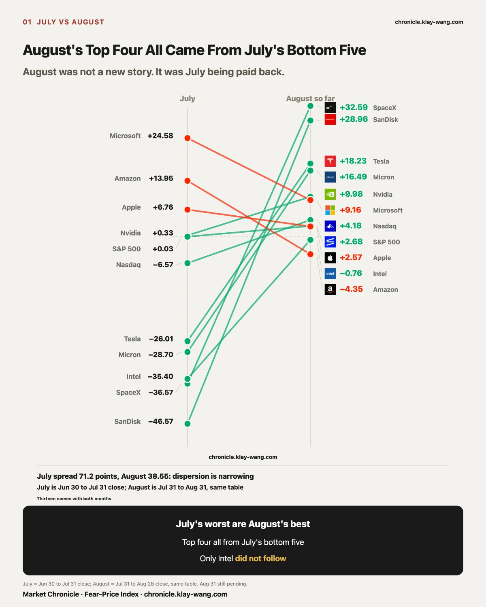
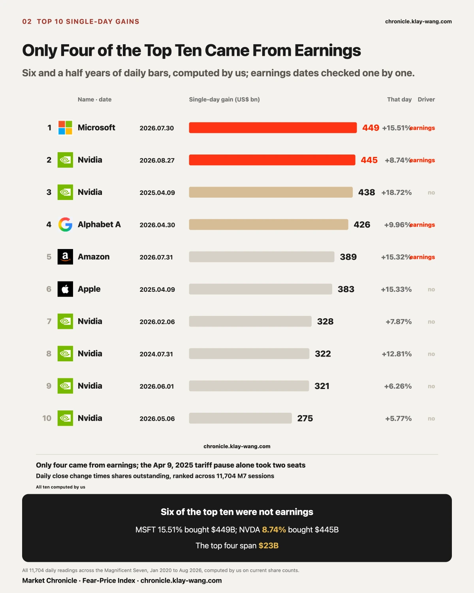
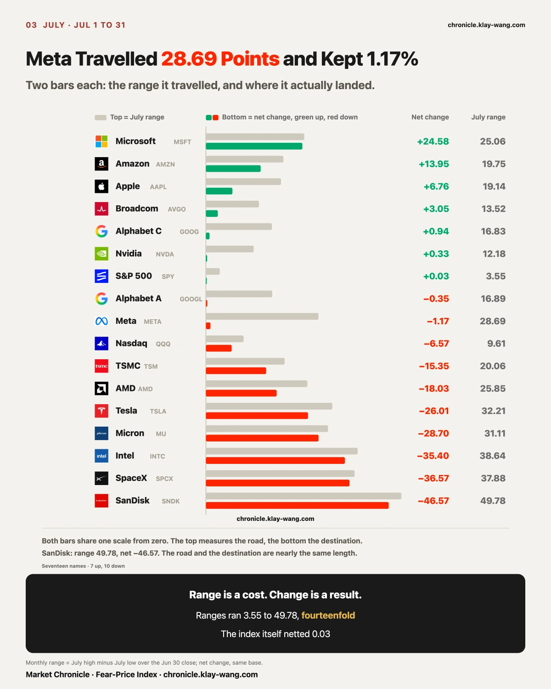
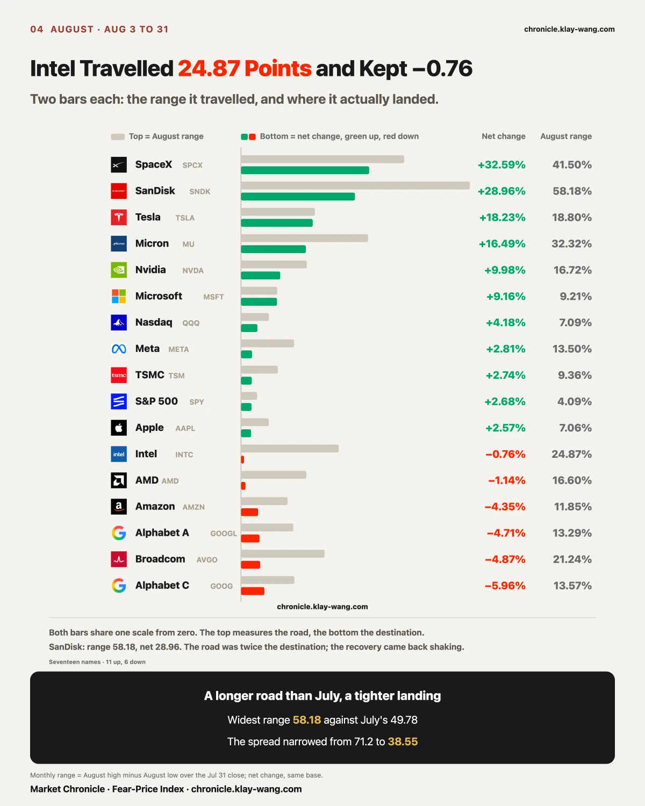
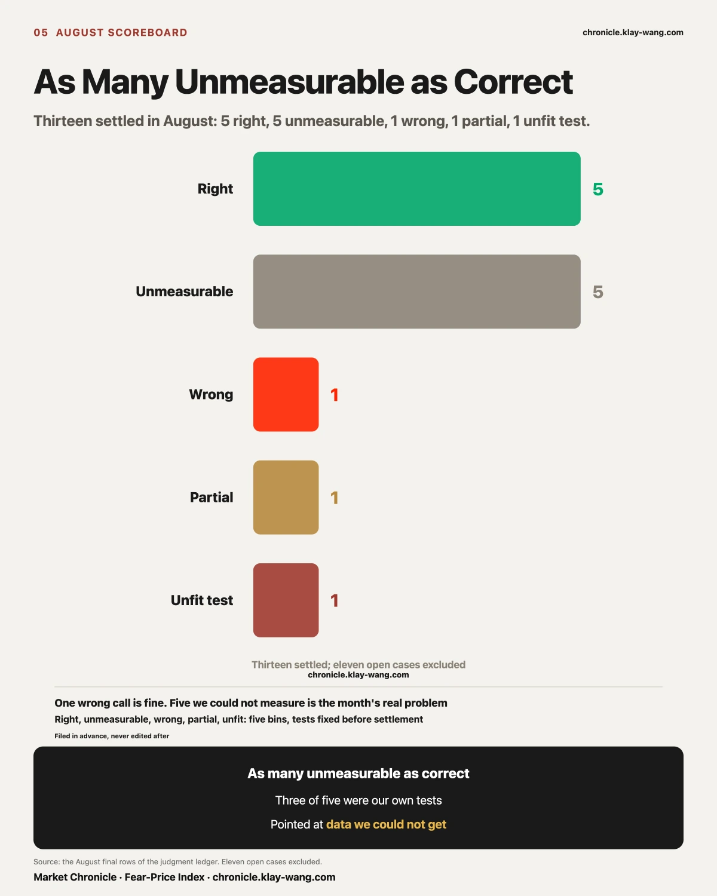
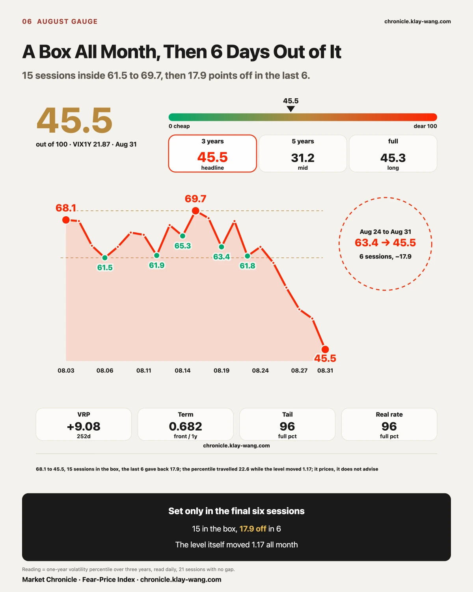
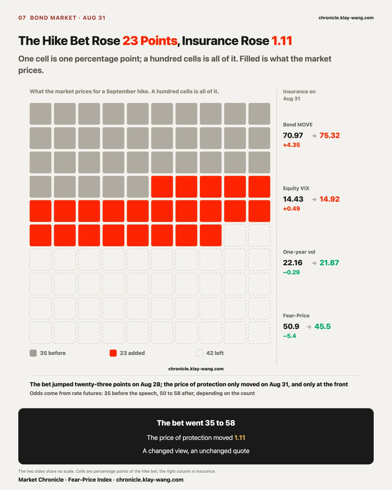

In July we wrote one line: in a month that closed +0.03%, someone made a quarter and someone lost close to half. August is that line read backwards.
July's five biggest losers were SanDisk at −46.57%, SpaceX −36.57%, Intel −35.40%, Micron −28.70% and Tesla −26.01%. August's four biggest gainers were SpaceX +30.57%, SanDisk +22.24%, Micron +13.34% and Tesla +12.06%. Four names, every one of them off that loser list.
The other end matches too. July's three strongest all slowed or turned negative in August: Microsoft +24.58% to +10.50%, Amazon +13.95% to −1.90%, Apple +6.76% to +3.49%.
August was July's recovery. The biggest gains of the month bought the level July had knocked the stock down to. The question worth asking is how much of that recovery is left.
One name in the group did not come back. Intel fell 35.40% in July and managed only −0.81% in August, while the other four averaged a 19.55% bounce. It went down with them and did not climb back with them. That single name draws the boundary around the recovery call. If August were an indiscriminate bounce off the lows, Intel should not have been left behind. It was left behind, so the market sorted within the group. In July they looked like one asset. In August the market pulled them apart. So the line that says beaten-down names come back was falsified this month: one of five did not.

August's single largest number sits off the recovery line. On August 27 Nvidia went from 209.66 to 227.98, up 8.74%. Against 24.3 billion shares outstanding, it added roughly 445 billion dollars of market value in one day.
We computed this table ourselves. We pulled every daily bar for the Magnificent 7 from January 2020 through August 2026, split-adjusted, and ran (today's close minus yesterday's close) times shares outstanding for every session, 11,704 readings in all. Then we checked each entry against the company's earnings calendar to see whether it actually landed on a report day.
The top ten: Microsoft 449B (07.30, up 15.51%), Nvidia 445B (08.27, up 8.74%), Nvidia 438B (2025.04.09, up 18.72%), Alphabet A 426B (04.30, up 9.96%), Amazon 389B (07.31, up 15.32%), Apple 383B (2025.04.09, up 15.33%). The last four are all Nvidia: 328B, 322B, 321B, 275B.
Microsoft 07.30, Nvidia 08.27, Alphabet 04.30, Amazon 07.31. Only those four had the company reporting that morning or the evening before. The other six had nothing to do with earnings. Widen it to thirty and only nine of the thirty are earnings days.
Most of the largest single-day gains in market value were bought with something other than results.
One day deserves its own line. On April 9, 2025 the tariff pause put four names into the top thirty in a single session: Nvidia third, Apple sixth, Microsoft fourteenth, Amazon twenty-third. Policy raised the water level of the whole pool, and no company had done anything right that day.
The numbers you rehearse before an earnings print explain three tenths of this table. The other seven tenths come from policy, from flows and from mood, and none of that appears in any filing. Putting all your research time into earnings covers a third of the battlefield.
The top four are separated by 23 billion dollars, under six percent of the leader. Microsoft's 15.51% bought 449B; Nvidia's 8.74% bought 445B. Nearly the same money for half the move.
The base got bigger. At five trillion dollars, a routine beat manufactures close to half a trillion in a day, and the phrase second largest ever is losing its value fast.
Nine of the top ten happened after 2025, with only Nvidia's 2024.07.31 entry older. Widen to thirty and twenty-four of them sit after 2025. The table is collapsing toward the present.
Running it ourselves surfaced what the published tables miss. Amazon's 389B on 2026.07.31 at fifth and Apple's 383B on 2025.04.09 at sixth appear on no public list we could find, while the two that live permanently on those lists, Meta 2024.02.02 at 197B and Apple 2022.11.10 at 191B, fall out of the top ten on a full recount.
Back to August 27. 445 billion dollars appeared in one day, and the market added 0.66 of a volatility point to a year of insurance on Nvidia. Market value is settled in a day; the price of risk is spread across a year. The two never move together.
Scope: Magnificent 7, January 2020 onward. Outside the seven we also scanned Broadcom, TSMC, Eli Lilly, JPMorgan and Walmart; the largest there is Broadcom's 207B on 2024.12.13, below this table's tenth place at 275B, so the top ten is unaffected. Market value is back-computed with current shares outstanding, so historical figures carry the effect of later buybacks and issuance: checked against six entries with public reporting, every deviation fell between 2% and 7%. Earnings attribution was checked entry by entry against broker and company earnings calendars, on the test of whether the company reported that morning or the prior evening.

To see how deep a hole August climbed out of, July has to be laid open first. Seventeen names, seven up and ten down. The other column matters more: how far each one travelled inside the month.
The smallest range was the S&P ETF at 3.55, the largest SanDisk at 49.78, a factor of fourteen. The S&P ETF netted +0.03% that month.
Put the two columns side by side and three completely different kinds of month appear.
The leaderboard records the last two as the same thing. July's Meta and July's S&P 500 both read as barely moved, while one swung 28.69 points and the other 3.55. For anyone holding Meta, those 28.69 points happened, and somebody paid real money for every stretch of them.
That is also where August's recovery started: the biggest gainers of August all walked a one-way road in July.
Now the spread across the two months. July's seventeen had 71.2 points between top and bottom while the S&P ETF moved 0.03%; August's same table has 38.55 points between the ends with the S&P ETF at +2.68%. The spread narrowed by nearly half and the index went from still to modestly higher.
Read those together. July had the index cancelled out by its two extremes; August has the extremes themselves converging while the index starts to climb. The shelter is getting thinner. The weekly review measured the same thing on a shorter ruler: within a week the members cancel and the index looks calm. Across a month, that cancellation stops holding.
What this means for you: the July reading of the index did not move so nothing happened starts to fail in August. When the index moves, the two ends stop providing the offset.

Lay August out on the same chart: two bars per name, the range travelled on top, the month's net change below.
August's widest range beat July's: SanDisk travelled 58.18% against July's maximum of 49.78%. Intel travelled 24.87 points and kept −0.76%, once again walking a road thirty times its destination. The narrowest was still the S&P ETF at 4.09%, and the widest-to-narrowest ratio held at 14.2 times against July's 14.0. The dispersion did not shrink.
What changed was direction. July's seventeen split 7 up and 10 down with 71.15 points between the ends; August ran 11 up and 6 down with the ends squeezed to 38.55. A longer road, a tighter landing: the market shook harder and stopped splitting in two.

The error first.
Microsoft's 115 million was dividend arbitrage, and we read it as a directional bet. Wrong. The ex-dividend date was August 20 and those orders printed at 2:37 the previous afternoon; all eight strikes from 390 to 435 sat deep in the money with the stock near 483; all eight carried the same 2:37 timestamp, making it one order, not nine; open interest went to zero afterward. The error was reading deep-in-the-money plus size plus one expiry as direction, without first asking where the ex-dividend date fell.
The five correct calls were right in the same place, all of them reading the structure the money left behind: Micron's 800-strike call block as a leveraged directional bet (large buyer loss at expiry, confirmed); of Apple's three-tenor trade only the 340 strike needing a real move to break even (expired worthless, confirmed); the two storage names having their August 17 gains fixed before the open with the session merely declining to take them back (two consecutive days, both legs same sign, four pairs with none reversed); the fence pricing which side the trouble lands on (the following three prints all ran heavier in the back half than the front); and the four hardest-hit names on August 19 all shrinking in volume, with the decline coming from absent buyers.
In July we wrote: guessing where price goes, zero for two; reading what the money is doing, three for zero. August did not change that.
The real problem sits in another column. Five unmeasurable, exactly as many as we got right, and not one of the five was the market failing to answer.
July's lesson was to stop guessing direction. August exposed the layer beneath it: where the test is written.
A call is worth something only if the number is actually in your hands on the day it settles. Writing one starts with a question: will this source definitely exist on settlement day? Three calls died on that question. This becomes a rule, not a reminder. Tests may only rest on the tables we run every single day (daily closes, the short-dated EOD pass, the 15:45 constant-maturity print, the gauge ledger). Anything gathered by hand, by a third party, or in a single window is a hole we dig ourselves.

August's gauge has a clean shape. For the first fifteen sessions it moved only between 61.5 and 69.7 and never once left that box. It opened the month at 68.1 on 08.03, peaked at 69.7 on 08.17 and bottomed at 61.5 on 08.06.
The last six sessions fell without a pause: 63.4, 60.6, 56.3, 52.5, 50.9, 45.5. Seventeen and nine tenths of a point in six days, closing the month at its own low.
The level underneath it stayed between 21.87 and 23.04 all month, a range of 1.17 points. The percentile travelled 22.6 points while the level moved 1.17. Both numbers belong here: the percentile says where it ranks over three years, the level says what it costs. This month the ranking fell a long way and the price barely moved.
Someone will object that earnings hit the nearest expiries, so measuring the one year measures the wrong thing. Two things have to be separated here.
Whether a buyer of short-dated options makes money is a question about direction. Bought Thursday, the stock gapped 8.74% on Friday, and even with implied volatility collapsing on the print, the directional gain covered the volatility loss. That buyer made money.
Whether insurance is expensive is a question about volatility. Implied volatility collapsing after the print is exactly what insurance getting cheaper means.
A buyer profiting and insurance getting cheaper are two sides of one event. They do not conflict. The collapse in implied volatility is the mechanism that makes both true at once.
We have always measured the second one: the price the market puts on this risk. As for near versus far, the comparison below carries both ends.
The near end fell almost three times as hard as the far end.
Across the week with the heaviest event calendar, the near end ran 08.24 15.85, 15.45, 15.21, 14.51, 08.28 14.43. Nvidia's earnings, the PCE print and the Fed chair's address all landed inside those five sessions, and the near end never bounced once. The evidence that events land while insurance gets cheaper lives at the near end, not the far end. The one-year gauge measures the pricing centre. The two answer different questions, and neither testifies for the other.

The last section said the front and the back of the curve answer to different things. Rates have a
front and a back too, and in the final week of August both ends drew the same shape equities did.
The ruler first. MOVE is to the bond market what the Fear-Price Index is to equities: it prices
what the market currently pays to insure against rates moving. The dearer it gets, the more the
market fears rates will lurch. Our table runs from November 2002, 5885 sessions through month end.
On 28 August it read 70.97, the 14.8th percentile of the past three years.
On roughly 85% of the days in those three years, that insurance cost more than it did that day.
The same day the Fed chair finished speaking at Jackson Hole, rate futures moved the odds of a
September hike from just over a third to close to six in ten (35% before; 50% to 58% afterwards
depending on whose count. We list every one of them and merge none.)
Here is what the four rulers did that day: equity fear went 14.51 to 14.43, one-year fear went
22.24 to 22.16, the Fear-Price reading went 52.5 to 50.9, and only bond fear rose, 69.86 to
70.97, a gain of 1.11.
The market changed its view of what will happen and barely changed its quote for how rough it will be.
On 08.31 the ten year Treasury yield rose to 4.75%, the highest since January 2025, and the
thirty year firmed 4 basis points to 5.25%. The same day:
| 08.28 | 08.31 | |
|---|---|---|
| Equity fear | 14.43 | 14.92 |
| Bond fear | 70.97 | 75.32 |
| One year fear | 22.16 | 21.87 |
| Fear-Price reading | 50.9 | 45.5 |
The bond ruler jumped 4.35 in a single session, the third largest one day move of August, and its
percentile went from 14.8 to 22.1. The equity ruler added 0.49. The one year layer instead fell
to 21.87 and the reading fell to 45.5, both of them lows for the month.
The front end reacted and the back end ignored it. On the day the yield reached its highest since
January 2025, the money paid to cover the next month of rate turbulence went up, and the money paid
to cover the whole coming year got cheaper.
A widely shared piece at the end of August said the MOVE index had been climbing steadily since the
start of June.
Pulled day by day: 73.33 on 1 June, a high of 83.02 on 31 July, then a retreat across all of
August to 70.97 on 28 August, and a 4.35 jump on the final session to close at 75.32.
June and July went up. August went down. The last day jumped back. The month did end above where
June started, but the path was a fall and then a jump, not a steady climb. Those two readings are
far apart: a steady climb means pressure accumulating, a fall and then a jump means it was waiting
for one specific date.
One thing that piece left out: across the last three years, 756 sessions, MOVE printed above 120
on 70 of them, topping out at 141.67. So 120 is no rare ceiling. Over three years, one day in ten
sat above it. Today's 75.32 is still a long way from there.
On 19 August Treasury announced it would raise the per-operation cap on buybacks in the 10-to-20 and
20-to-30 year sectors from two billion to at least four billion, effective 9 September,
running through 4 November, the end of this refunding quarter.
As of the last day of August, not one four-billion operation had run. Some readings turned the
announcement into an act already taken, with long yields falling in response. Those are two
different things.
Whether they will is a question the one payrolls print and the one CPI print before the 16 to 17
September meeting will answer for everyone, and we do not call it. But whether it turns disorderly
afterwards has already been answered, in four places, with money:
| What the money pays for | Before the address | Month end | Note |
|---|---|---|---|
| That they will hike | just over a third | around half | rate futures, outside counts run 50 to 58 |
| That rates turn disorderly | 12.7th percentile | 22.1st percentile | bond insurance, moved only on the last day, still the 43rd percentile of the full history |
| That long bonds fall | ordinary | 0.66 | puts against calls on long bond ETF options, below 1 means more buying of calls |
| That next year turns fearful | 52.5 | 45.5 | the Fear-Price reading, closing the month at its low |
The money paid on whether nearly doubled. Not one of the places that pays for disorder was bid up.
Long bond ETF options were in fact tilted toward calls: their thirty day insurance sits at the 32.8th
spot in its own range, cheaper than most of the technology names we track.
A harder comparison: rate futures have all but fully priced at least one hike before year end, and in
the same stretch the one year fear price fell to its low for the month. The market paid for one. It
did not pay for a series. That line is worth arguing over, so here is what takes it back: if the one
year reading lifts above 55 within three sessions of a September hike landing, or MOVE climbs above
the 90th percentile of the last three years, then the market has re-read this as the start of a
series, this passage is withdrawn and we say we got it wrong.
The MOVE alarm at the 90th percentile and above has been right roughly four times out of eight.
It is a dashboard, not a predictor. The reverse holds as well: the 22.1st percentile does not
mean nothing is wrong. It means rate insurance is still cheap.
Its price and its insurance told opposite stories all month.
The price line: +9.98% for August across a 16.72-point range, +8.74% on earnings day with about $445 billion added in one session, closing at 220.78, 6.66% under its all-time high.
The insurance line fell the whole way: the one-year read dropped from 42.54 to 39.41, and its thirty-day rank inside its own recent range slid from the 61.4th percentile to the 2.0th. Earnings night we recorded the same lesson in miniature: the stock rose 8.74% and one-year insurance added 0.66.
The money agreed to an unusual degree: the closing sweep on the month's last day carried $14.3 million of calls and zero puts, and in the 91-day-and-out layer it took 10.3% of all volume at a put-call of 0.56.
Three lines, one rare shape: a big price month, ever-cheaper insurance, and the downside money all but gone. The options market has demoted its earnings nights from events to routine. The fence section holds the other half of its season: the one fence where the intraday high and the close return opposite verdicts.
The judgment: the market has stopped paying for its downside. That does not mean it will not fall. It means nobody bought a cushion in advance. In a tailwind this is called consensus; when the wind turns it is called being uncovered. Retraction: the thirty-day rank back above 30, or any session where put premium outruns call premium.
Only six names fell in August and both Alphabet shares are on the list: the A shares −4.71%, the C shares −5.96%, against an index up 2.68%. The A shares fell on 12 of 21 sessions and ended about 17% under their high.
By the losers list it was August's casualty. By the options book, almost nobody bet on the fall continuing:
A month of falling prices, while the money that insures against falling walked away and the insurance got cheaper. The market's read, in its own money: this decline was priced as a lull with no bidder, and never as the start of something. One outside item lines up at month-end: in MediaTek's record $3.9 billion convertible, alongside Nvidia's $3.5 billion, Alphabet appears among the buyers.
The judgment: the losers list calls it a casualty, the options ledger calls it a name set aside, and only one of those can be right. We place the burden of proof on the side that says it keeps falling. Retraction: the far put-call back above 0.8, or one-year insurance rising for three straight sessions.
First, what these seven fences are. The number has a name on most platforms: the expected move, usually shown as EM, sometimes called the implied range. The arithmetic is plain. Before a report, the options covering that earnings-night expiry get repriced; take the at-the-money call and the at-the-money put on that expiry, add them, divide by the share price, and you have how far the market thinks the stock travels once the numbers land. That is a quote: whoever sells the protection has to name a price, and once it trades, it is the consensus of that moment.
Whatever you intend to do with an earnings print, this number is where you start. Buy a single leg and it sets the time value you pay and how far the stock must travel before you break even. Trade a spread and it prices the distance between your legs. Sell an iron condor or a butterfly, where you collect on both sides, and the premium you take in is quoted off it, while where you place your wings is a bet the stock stays inside that range. Every one of those structures draws its profit boundary from this one number.
Of the seven across the Magnificent 7, six settled in July and August settled the seventh and last. The ledger: five broken cleanly, one held cleanly (Meta), one that went outside and came back (Nvidia).
The five that broke went two up and three down. With direction unfixed, the width itself was too narrow. That distinction decides whether it can be repaired: a wrong direction is fixed by adjusting skew, a wrong width cannot be fixed at all, because the entire range was set too small. And this season it was set too small systematically.
So here is what this ledger is worth to you: the profit boundary you drew off EM before each report fell short five times out of seven. Anyone selling both sides had their wings placed on a fence that broke five times in seven.
Nvidia's own fence was ±5.03%, printed eight days ahead, anchored at 213.05, running 202.33 to 223.77. The session high of 230.47 used 163% of the upper half; on August 28 it closed 217.55, back inside by 6.22 dollars. Of the seven, only this one gives opposite answers depending on whether you judge at the intraday high or at the close. The rule was written into the Meta section at the end of July: settle on the close, because it is the only point we do not get to choose.
All times Eastern. On the last day of August the Fed chair said financial conditions are not restrictive and that rates are the primary tool. The first full week of September is employment from end to end. That sentence gets tested on Friday.
No advice. But the money on each name argues for one side, and we translate it, with the conditions under which we take it back.
Holding SanDisk: up 22.24% in August, still below its July starting line across the two months. The last day matters more: the rise was index-inclusion buying that expired at the close, and the same day its two heaviest option prints were puts a tenth below the price. From here it is on its own. We place the burden of proof on the side that says it keeps going. Retraction: a week after the inclusion bid leaves, if it still closes above 1,500, this doubt is withdrawn.
Holding Micron: same storage story, opposite money. Its new prints sat above the price, with the 950 calls trading near three times prior interest, and it sits less than a tenth off its 08.25 high. One sector story, and the market renewed insurance for only one of the two. Side by side, the money leans here.
Holding Intel: the group bounced 19.55% on average and it returned less than nothing. Its own storyline is in court: the run built on government-stake headlines peaked on 06.30, has given back thirty-seven percent, the stake itself faces a shareholder suit, and hearings queue up after the midterms. The rally would not carry it and its own story is on trial. The market will not pay to wait for it, and we will not front that money on the market's behalf. Retraction: a catalyst of its own plus two straight weeks outrunning the group, and this paragraph comes out.
Holding Tesla: the month's last-day leader, and its money has a shape. The call ladder crowds into September's calendar, the far end holds a single real print in the February 2027 770 calls, and its thirty-day insurance ranks at its own 2.8th percentile. The market trades it as a September calendar event. It does not hold it as a growth story. If the launch lands, the cheap insurance was free money; if it does not, nothing at this price was bought as a cushion. Structure, no direction: whoever holds it today is holding an event ticket.
Holding Microsoft: the only name up both months, and the only name this letter never had a story about. No fence broken, no unusual bet, and the hundred-million August print was dividend arbitrage. The market has no argument about it. Not appearing in our pages is the best thing said about it here.
Holding nothing, waiting: the reusable observation this month is that recovery after extreme drawdowns is selective: five names in one group, four bounced, one did not. A low price alone is never the reason. The market discriminates even at the lows.
Fear-Price Index · 2026-08-31 · reading 45.5/100: one-year volatility VIX1Y at 21.87, in the 45.5th percentile over three years, where high means expensive. Daily ledger and methodology at chronicle.klay-wang.com · Attribution: Fear-Price Index · Market Chronicle
August ran like this: 68.1 at the start, a high of 69.7 on 08.17, then down to 45.5 across the final six sessions, closing the month at its own low. The level moved 1.17 points all month while the percentile travelled 22.6.
Options flow and single-name data at chronicle.klay-wang.com/options
Gauge readings and both ledgers at chronicle.klay-wang.com